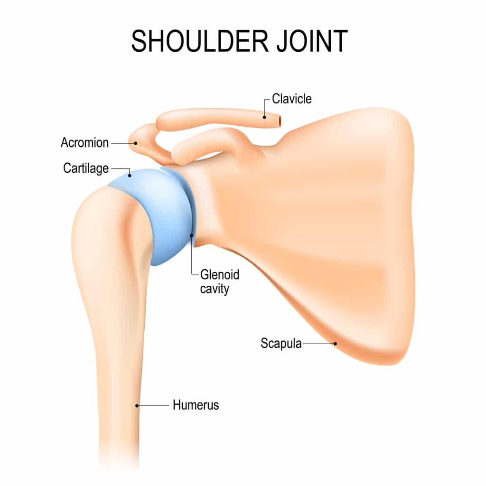
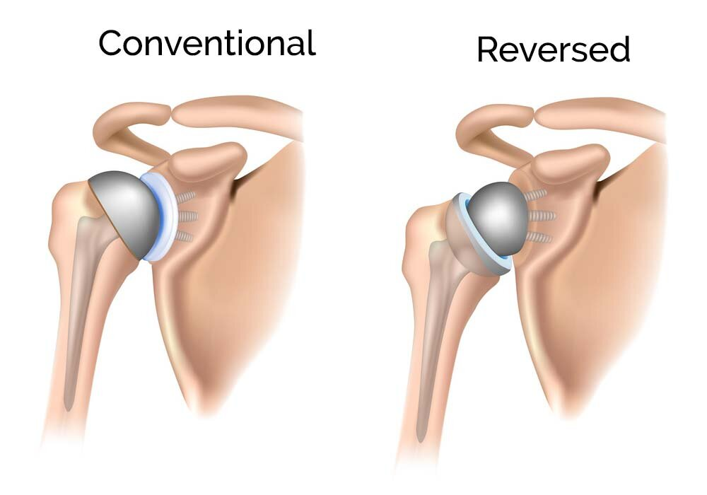
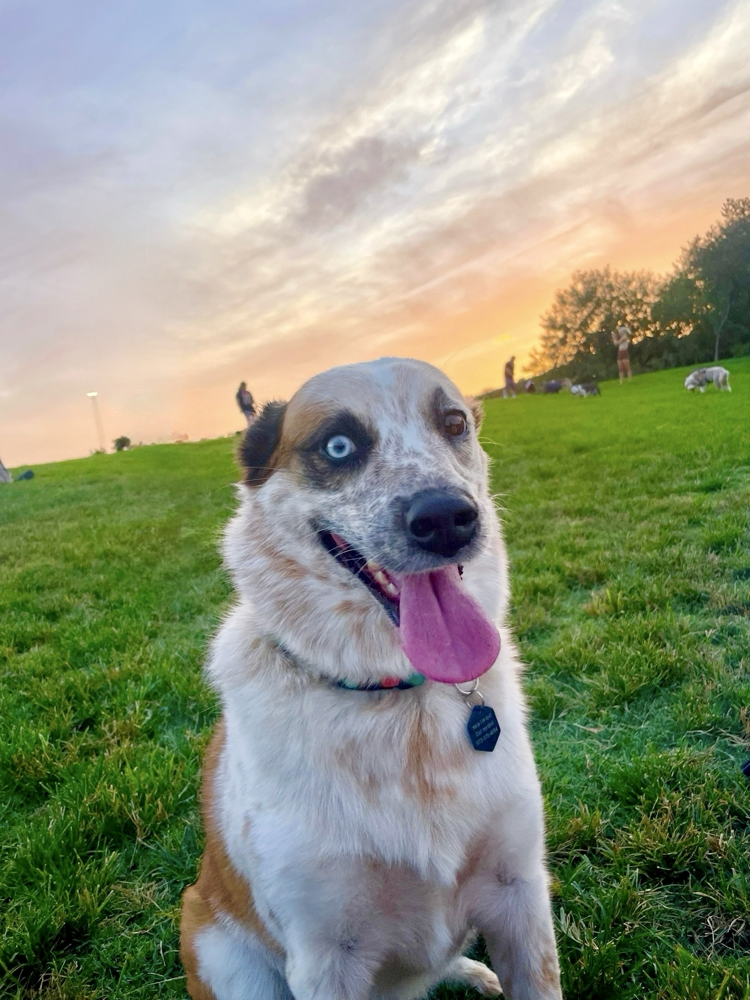
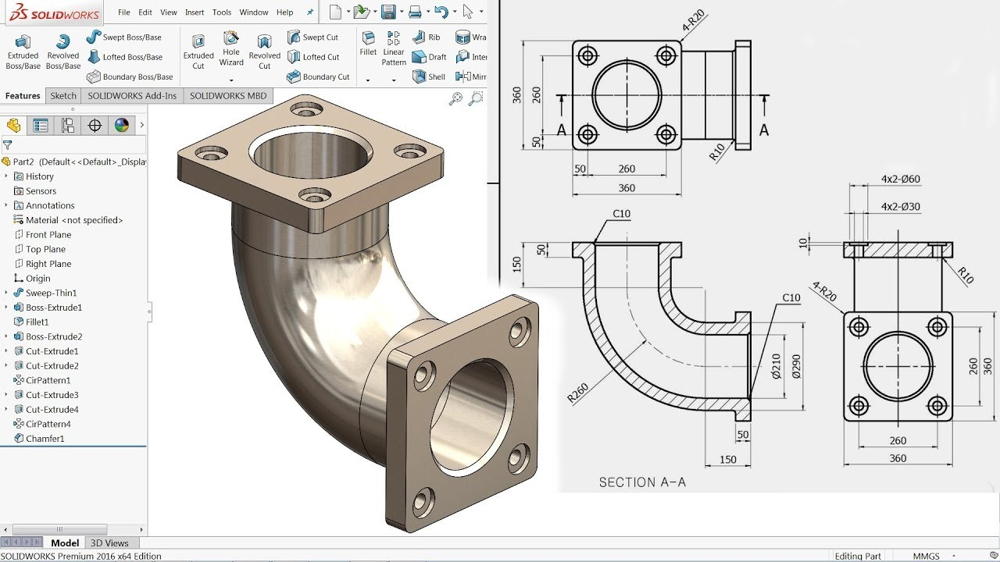

Welcome to a portfolio: Grant Copeland. I am a learner and creative at heart, an engineer and developer by trade, and someone who seeks nature and adventure in soul.
Born on Christmas Eve, 1994 in Plano, TX. I grew up and lived in the same area until I was 18 years old. When I was 5 years old my father bought me my first gaming system: a Nintendo 64. The first time I played Star Fox 64 my 5-year-old brain was blown away. I fell in love with technology and video games that day. Around this same time my father taught me how to ride my first bike. I still remember him pushing me to speed, releasing me and the feeling of actually riding the bike without training wheels. Moments later I lost speed and fell to the ground.
As I got older I started playing desktop games and learning how to use a computer. I also started helping my father plant trees into our local park. These experiences began to shape my life through to this day; a balance of nature, appreciation for our environment, technology, and digital experiences.
2020-2024: Enovis
Enovis is a medical technology company. While they manufacture many medical devices, their main business is in surgical, orthopedic medical devices. For four years I worked as a product development engineer at Enovis. I was part of two colossal product releases, designed orthopedic implants and instrumentation for upper extremity join replacements, and worked with some of the leading subject matter experts in shoulder athroplasty (surgery to restore the function of a joint).

I began running cross country as a freshman in high school as a means to get into shape but quickly became very competitive. I would end high school as the fastest runner to have ever attended Plano West Senior High School, a 6A school. When I was 17 years old I ran my fastest ever 5K time of 15:08. My hard work led to a full ride to UT Arlington, a local division 1 university, to compete.
Collegiate long distance running is a year round sport: Cross country begins in August through November. Indoor Track begins in December and persists through February. Outdoor Track begins in March and ends at the end of May. June through August is the only off-season you get and it's required to reset for 10 days and build up your endurance for the long year.
Four years of divison 1 athletics while trying to keep good grades in an engineering degree, maintain friendships, discover the world, and have left me burnt out. This was a tough ending to a sport I was passionate about and was so competitively good at. Despite the rough landing. I achieved times I am ultimately very proud of:
Orthopedic medical devices are designed to replace the joints of patients that have become deficient and painful. Enovis is a medical techology manufacturer of orthopedic implants and instrumentation. I launched two large scale projects in my four years with Enovis.
AltiVate Reverse Glenoid was a 3 year project designed to improve upon the bread-and-butter, original reverse shoulder orthopedic implant. Different people have different wear patterns on their shoulder joints and for different wear patterns, different configurations of implants can have better fit and preserve more patient bone.
The AltiVate Reverse Glenoid (ARG) project came out with 4 new baseplate configurations, 2 new screw sizes, new screw drive features, and modernized the instrumentation used to prepare for the original implant as well as introduce new instrumentation to prepare for the new implants.
My specific role was focused on designing and developing the instrumnetation for the implants. This included:
SolidWorks is a Computer Aided Design (CAD) software package designed to allow users to model objects in 3D using specific mechanical dimensioning. Once an object is modeled, a drawing can then be created to show specific views which highlight dimensions associated with the geometry of a model. With these two features, machinists can create the model and hold the specified dimensions to the tight window of tolerance specified on the drawing.
My interest in software engineering began a few years ago when I buddy described to me what he did and what his day to day looked like. As I began to understand more what software engineering was and what programming languages did, my interest grew. While I always feared software engineering and programming as unlearnable and unapproachable, I started to realize with a more definitive structure I could learn to become a software engineer. This mindset, along with the growing apathy towards my career in medical devices, led me to Coding Temple.